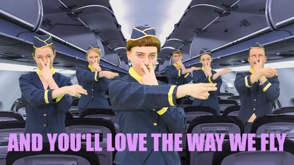

Camille Tricaud & Franziska Unger
Camille Tricaud born in Bordeaux. Studied philosophy and documentary film at the HFF Munich since 2014. 2018 Camera studies at the ENS Louis Lumière Paris. Her medium-length film Which Way to the West won the 3sat Award at the Oberhausen Short Film Festival.
Franziska Unger Diploma in architecture at the TU Dresden. She works on architectural and film projects and makes video art.
www.tanpopo.co
Films (Camille Tricaud) I Love My #Hairlegs (with Mila Zhluktenko and Charlotte Funke ) 2018 (13. UX) | Which Way to the West 2019 | Apocalypse Airlines (mit Franziska Unger) 2018
Apocalypse Airlines
2019 | Video, Sound
3 min | Music arrangement by Lovemen
R+S: Tricaud, Unger | K: Lilli Pongratz; Kristina Kilian, Maria
Ostermayer (Ass.)
Licht: Jianni Mürbock | P: Claudia Schnupp, Hanna Bohnenberg | Mit
Niels Behrendt, Annelie Boros, Tobias Göppel, Lena Liegel, André
Lemmer, Pauline Stumpf, Christina Unger
Fake advertising for a fictitious airline that confronts us with our own contradictions. We want: to travel, to discover the world, to feel free. At the same time, we are aware of the ecological consequences of air travel. Are we prepared to compromise in order to live responsibly? Is this a purely individual or a political question? How do we deal with advertising?
kinoscreening dienstag 15 okt 20.30 werkstattkino | kurzfilmnacht